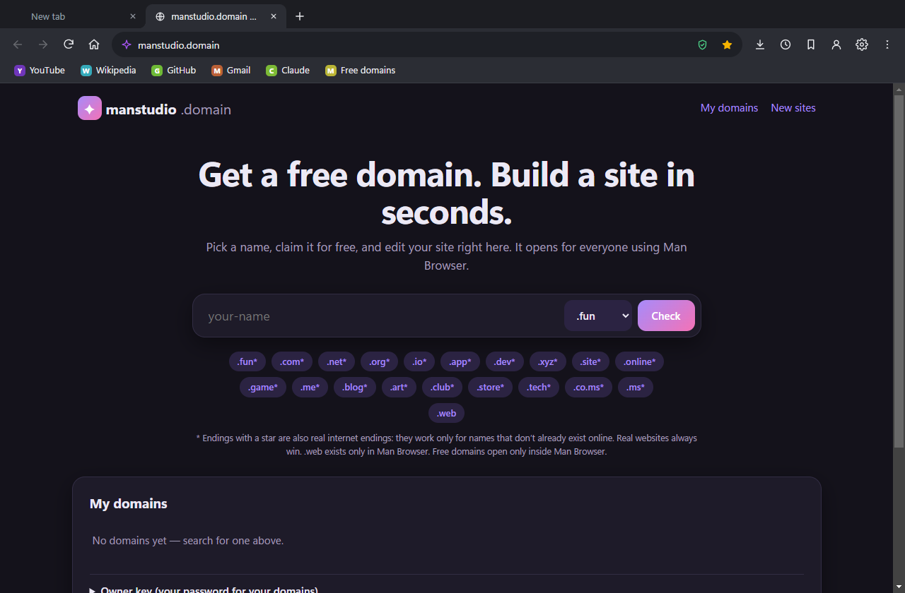
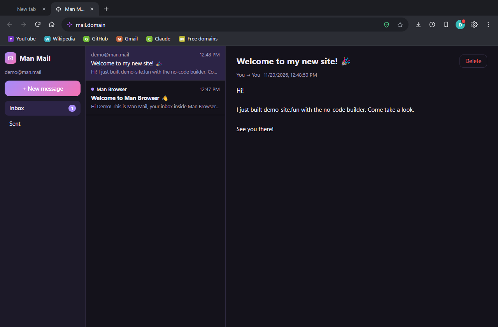
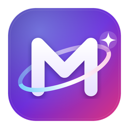

אתר משלך, בחינם
לוקחים שם בחינם ב-manstudio.domain: .fun, .com, .site, .game ועוד הרבה סיומות.
לאתר יכולים להיות עד 50 דפים ו-30 MB, וכל שינוי עולה לאוויר לבד.
Man Browser חוסם פרסומות, נותן לך דומיין בחינם ומאפשר לבנות אתר משלך תוך דקות, גם בלי לכתוב קוד.
בחינם · Windows 10 ו-11 · הגרסה האחרונה · מתעדכן לבד

נבנה על ידי Man Studio על אותו מנוע של Chrome, כך שכל אתר פשוט עובד.
דפים נטענים מהר ונקי יותר, בלי להתקין כלום.
לוקחים yourname.fun, .site, .game ועוד ב-manstudio.domain.
בוחרים עיצוב, מוסיפים בלוקים, והאתר באוויר. או מדביקים קוד משלכם.
חיפוש בכל האתרים שנבנו ב-Man Browser, וגם בוויקיפדיה וברשת.
תיבת דואר משלך בכתובת name@man.mail, בתוך הדפדפן.
גרסאות חדשות מותקנות ברקע, ודף "מה חדש" מראה מה השתנה.
לוקחים שם בחינם ב-manstudio.domain: .fun, .com, .site, .game ועוד הרבה סיומות.
לאתר יכולים להיות עד 50 דפים ו-30 MB, וכל שינוי עולה לאוויר לבד.

מוצא את האתרים שאנשים בונים ב-Man Browser, עם תוצאות מוויקיפדיה וכפתורים לחפש בגוגל, Bing או DuckDuckGo.

לכל חשבון יש תיבת דואר. כותבים למשתמשי Man Browser אחרים ומקבלים הודעות על החשבון. שכחת סיסמה? קוד השחזור מחזיר אותך פנימה.


בחינם ל-Windows 10 ו-11.
⬇ הורדת Man Browserייתכן ש-Windows יציג "Windows protected your PC", כי Man Browser עוד לא חתום דיגיטלית. לוחצים More info ואז Run anyway.
כן, לגמרי בחינם, כולל הדומיינים ובניית האתרים.
לא. דומיינים כמו yourname.fun נפתחים רק ב-Man Browser. אתרים אמיתיים תמיד קודמים: שם שכבר קיים באינטרנט אי אפשר לקחת.
Man Browser רץ על Chromium, המנוע של Chrome, עם האבטחה של Chrome. הקוד שלו פתוח לכולם ב-GitHub.
כן.